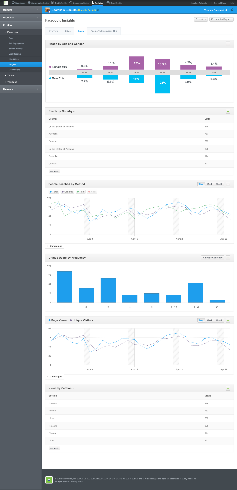
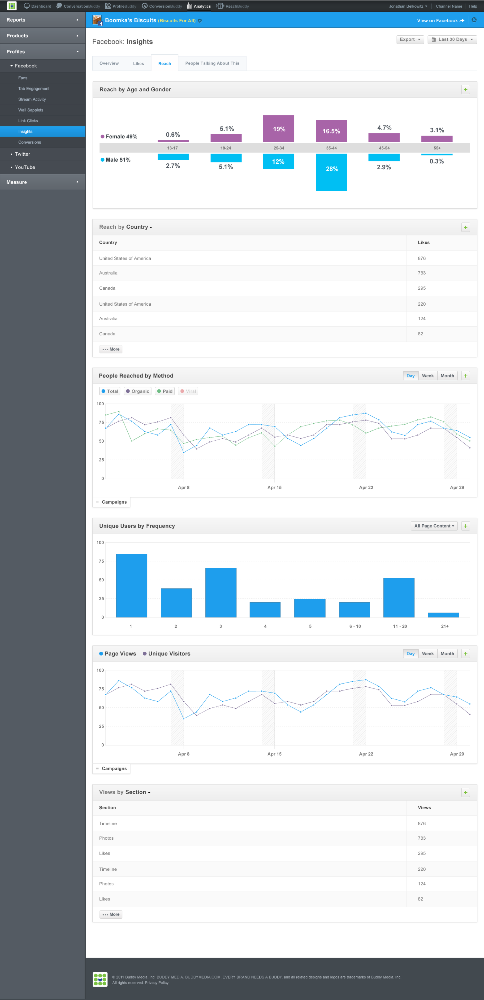

Analytics 3.0
Working closely with a UX Designer, we created a product that would allow a client to track all the social media metrics they could dream of across all of the brands they manage. It was an enormous piece of software built up from lots of modular parts.
 



ConversationBuddy 2.0 (early explorations)
While I didn't get to design the final ConversationBuddy product, I did get to participate in some of the early explorative design. ConversationBuddy was meant to be the TweetDeck or Hootsuite of BuddyMedia's product offering.